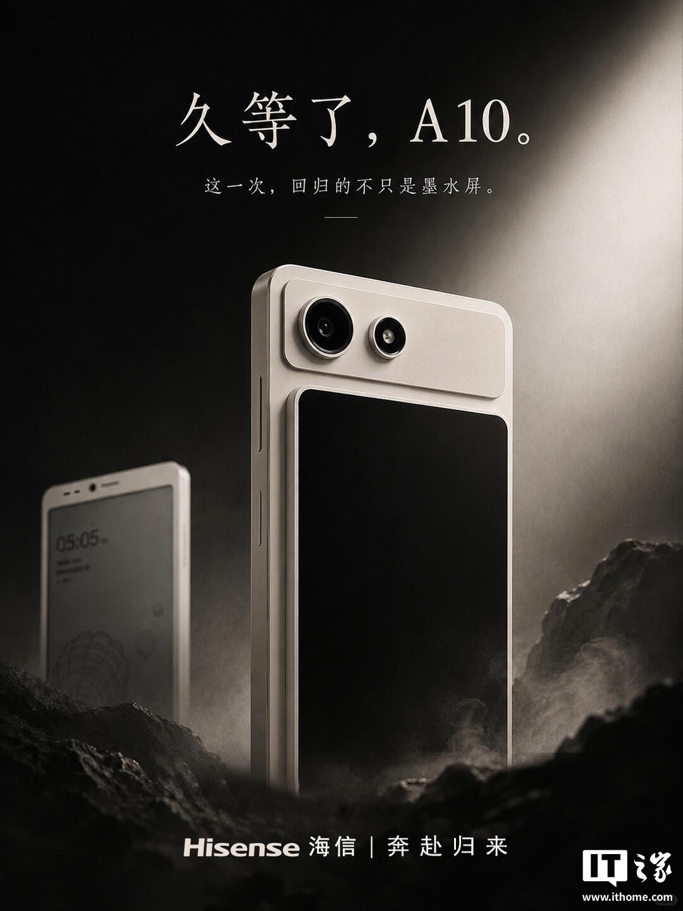

제품 사양 및 성능
Hisense E-Ink 스크린 A10은 4nm 공정의 Qualcomm Snapdragon QCM6690 옥타코어 프로세서를 탑재하여 전작 대비 향상된 성능을 제공합니다. 이 기기는 PDF 페이지 넘김, 다중 문서 분할 화면, 장시간 필기 시 끊김 없는 환경을 지원하며, 지능형 온도 제어를 통해 잔상을 줄이고 정지 화면 읽기 시 자동으로 주파수를 낮춰 플래그십 칩셋 대비 개선된 배터리 수명을 제공합니다. 또한 안드로이드 16 시스템을 기본 탑재하여 장기간의 시스템 업데이트와 보안 패치를 지원합니다.
주요 기능
A10은 다음과 같은 6가지 주요 기능을 지원합니다.
- NFC
- 적외선 리모컨(오프라인 상태에서 에어컨, TV, 프로젝터, 셋톱박스 제어 가능)
- 네이티브 앱 분할(주요 애플리케이션 소프트웨어 지원)
- 네이티브 통화 녹음(시스템 기본 기능으로 원터치 녹음 지원)
- 마그네틱 무선충전(자동 부착)
- 전문 고속 새로고침 모드(E-Ink 스크린의 끊김 및 잔상 문제 해결에 특화)
디스플레이
A10은 전면에 6.13인치 종이 질감의 E-Ink 스크린을 탑재하여 장시간 독서와 메모 작성에 적합합니다. 후면에는 선택적으로 LCD 컬러 스크린을 장착할 수 있으며, 자유로운 전환 기능을 통해 이미지 및 텍스트 탐색, 컬러 만화 감상, 차트 확인, 일상적인 멀티미디어 및 소셜 활동 등 다양한 환경에서 활용할 수 있습니다.
출시 일정
이 E-Ink 스크린 신제품은 8월에 공개될 예정이며, 8월 말부터 판매가 시작될 것으로 예상됩니다.
총평
Hisense의 E-Ink 스크린 A10은 강력한 Qualcomm 프로세서와 안드로이드 16 지원을 통해 성능과 배터리 효율을 강화했습니다. 전면 E-Ink 스크린과 후면 선택형 LCD 컬러 스크린을 결합하여 독서와 멀티미디어 활용이라는 두 가지 목적을 모두 충족하는 것이 특징입니다.
核心硬件与性能配置
海信E-Ink 스크린手机 A10 搭载了高性能处理器，并针对电子墨水屏进行了深度优化。该机支持多项提升用户体验的功能：
- 处理器：4nm Qualcomm 骁龙 QCM6690 八核处理器
- 系统：原生适配 Android 16 系统，提供长期更新与安全补丁
- 性能特性：支持 PDF 翻页、多文档分屏及流畅手写批注；具备智能控温调度以减少残影，并支持静态阅读自动降频以延长续航。
特色功能亮点
该机型集成了六大原生实用功能，旨在提升日常使用的便捷性：
- NFC 与 红外遥控（支持离线控制空调、电视等设备）
- 原生应用分身与 原生通话录音
- 磁吸무선충전（自动吸附）
- 专业快刷模式（专门针对 E-Ink 屏幕的卡顿和拖影进行优化）
双屏交互设计
该设备采用独特的双面显示方案，满足不同场景的使用需求：
- 正面：6.13 英寸纸质观感 E-Ink 스크린（适用于长时间阅读与笔记）
- 背面：可选装 LCD 彩屏，支持自由切换（适合浏览图文、观看视频及社交互动）
发布计划
海信E-Ink 스크린手机 A10 预计将于 8 月正式发布，并计划在 8 月底开启销售。
总结
海信E-Ink 스크린手机 A10 是一款融合了 E-Ink 墨水屏与可选 LCD 彩屏的创新设备。它搭载 Qualcomm QCM6690 处理器并支持 Android 16，旨在通过独特的双屏设计和丰富的原生功能，提供兼顾深度阅读与多媒体娱乐的综合体验。
製品仕様と性能
Hisense E-Ink スクリーン A10は、4nmプロセスを採用したQualcomm Snapdragon QCM6690 オクタコアプロセッサを搭載しており、前モデルよりも向上したパフォーマンスを提供します。このデバイスは、PDFのページめくり、マルチドキュメント分割画面、長時間の筆記時におけるスムーズな操作環境をサポートしています。また、インテリジェントな温度制御により残像を低減し、静止画を表示する際に自動的にリフレッシュレートを下げることで、フラッグシップチップと比較しても優れたバッテリー寿命を実現しています。さらに、Android 16を標準搭載しており、長期的なシステムアップデートとセキュリティパッチの提供をサポートします。
主な機能
A10は以下の6つの主要機能を備えています。
- NFC
- 赤外線リモコン（オフライン状態でエアコン、テレビ、プロジェクター、セットトップボックスを操作可能）
- ネイティブアプリ分割（主要なアプリケーションソフトウェアに対応）
- ネイティブ通話録音（システム標準機能としてワンタッチ録音をサポート）
- マグネット式ワイヤレス充電（自動装着）
- プロフェッショナル高速リフレッシュモード（E-Inkスクリーンの遅延や残像の問題解決に特化）
ディスプレイ
A10は前面に6.13インチの紙のような質感のE-Inkスクリーンを搭載しており、長時間の読書やメモ作成に適しています。背面にはオプションでLCDカラースクリーンを装着することができ、自由な切り替え機能により、画像やテキストの閲覧、カラー漫画の鑑賞、チャートの確認、日常的なマルチメディアやSNS活動など、多様な環境での活用が可能です。
リリーススケジュール
このE-Ink スクリーン新製品は8月に公開される予定で、8月末から販売が開始される見込みです。
まとめ
Hisense E-Ink スクリーン A10は、強力なQualcommプロセッサとAndroid 16の搭載により、高いパフォーマンスと優れたバッテリー効率を両立しています。前面のE-Inkスクリーンと背面のオプションLCDカラースクリーンの組み合わせにより、読書とマルチメディア利用の両方のニーズを満たす設計となっています。
Product Specifications and Performance
The Hisense E-Ink Screen A10 is equipped with a Qualcomm Snapdragon QCM6690 octa-core processor built on a 4nm process, providing enhanced performance compared to its predecessor. The device supports seamless experiences for flipping PDF pages, multi-document split screens, and long periods of note-taking. Additionally, it features intelligent temperature control to reduce ghosting and automatically lowers the refresh rate when reading static content, resulting in improved battery life compared to flagship chipsets. It also comes with Android 16 pre-installed, ensuring long-term system updates and security patches.
Key Features
The A10 supports the following six key features:
- NFC
- Infrared (IR) Remote (capable of controlling air conditioners, TVs, projectors, and set-top boxes even when offline)
- Native App Split (supports major application software)
- Native Call Recording (one-touch recording as a system default feature)
- Magnetic Wireless Charging (with auto-attachment)
- Professional High Refresh Mode (specifically designed to resolve ghosting and lag issues common in E-Ink screens)
Display
The A10 features a 6.13-inch paper-textured E-Ink screen on the front, making it ideal for long reading sessions and note-taking. An optional LCD color screen can be attached to the back. With its seamless switching functionality, the device can be used in various environments, including browsing images and text, reading color comics, checking charts, and engaging in daily multimedia or social activities.
Release Schedule
This new E-Ink screen product is scheduled to be unveiled in August, with sales expected to begin in late August.
Overall Review
The Hisense E-Ink Screen A10 enhances both performance and battery efficiency through its powerful Qualcomm processor and Android 16 support. Its standout feature is the combination of a front E-Ink screen for reading and an optional rear LCD color screen, satisfying both productivity and multimedia needs.
Summary
The Hisense E-Ink Screen A10 features a high-performance Snapdragon processor and Android 16 to provide superior battery life and smooth performance. Its unique dual-screen design combines a front E-Ink display for reading with an optional rear LCD screen for multimedia content, catering to both focused reading and versatile entertainment.
